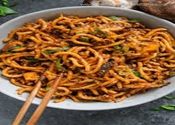
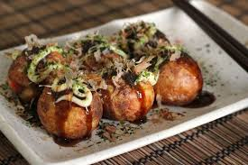

Sushi

sushi made of sweetish deep-fried tofu, filled with Japanese sticky rice and sometimes other ingredients like sesame or sakura
Udon
Udon (うどん) are thick Japanese noodles made of wheat flour. They are thicker than soba noodles, white and chewier. Udon is widely available at restaurants across Japan and prepared in various hot and cold dishes.
Takoyaki
Takoyaki (たこ焼き), which literally translates to grilled octopus, refers to the savory dish of grilled balls of batter made with flour and eggs filled with octopus chunks and other ingredients